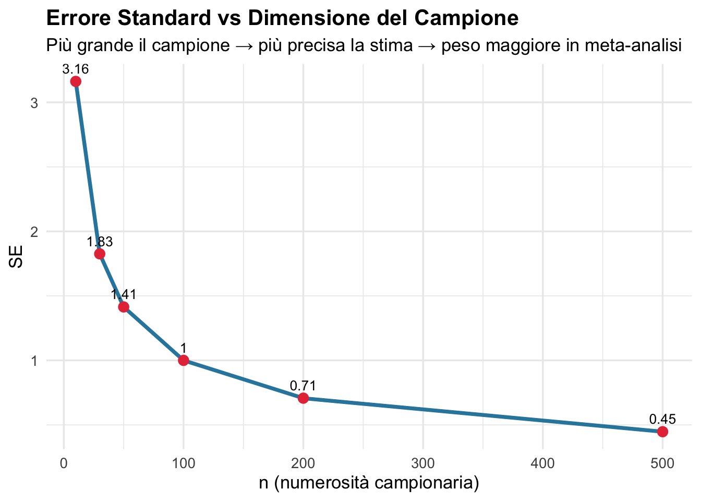
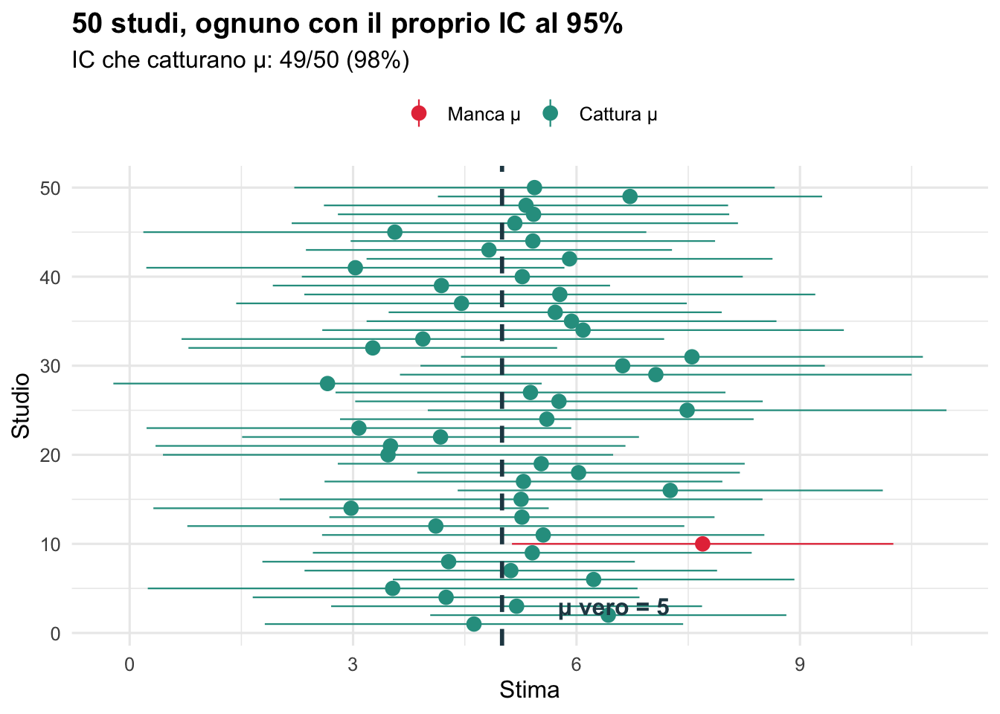
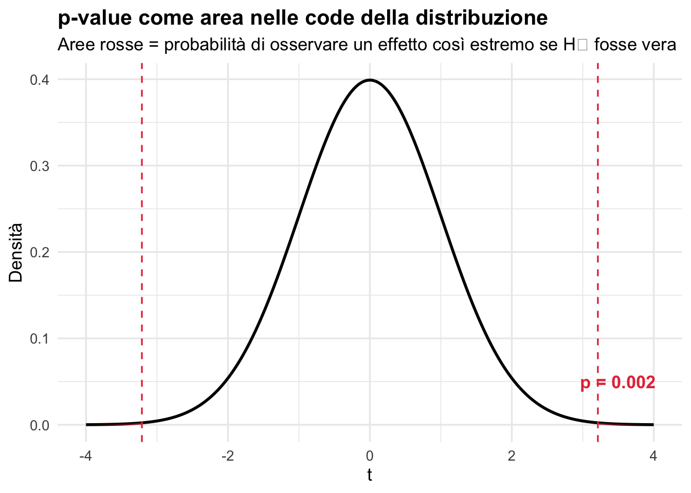

Media, varianza, errore standard, intervalli di confidenza e p-value: questi concetti appaiono in ogni formula di meta-analisi. Comprenderli in profondità significa capire perché la meta-analisi funziona.
1️⃣ Media e Varianza
set.seed(42)# Immagina 3 studi che misurano una riduzione della pressione (mmHg)studi <-list(studio_A =rnorm(n =30, mean =8, sd =5),studio_B =rnorm(n =100, mean =6, sd =4),studio_C =rnorm(n =15, mean =10, sd =7))# Calcolo manualerisultati <-map_dfr(names(studi), function(nome) { x <- studi[[nome]]data.frame(Studio = nome,N =length(x),Media =round(mean(x), 2),SD =round(sd(x), 2),Varianza =round(var(x), 2) )})knitr::kable(risultati, caption ="Statistiche descrittive per studio")
Statistiche descrittive per studio
Studio
N
Media
SD
Varianza
studio_A
30
8.34
6.28
39.38
studio_B
100
5.74
3.88
15.08
studio_C
15
10.11
5.27
27.81
2️⃣ L’Errore Standard (SE) — Il Cuore della Meta-Analisi
L’errore standard misura la precisione di una stima. In meta-analisi ogni studio porta il proprio effect size insieme al suo SE — senza SE non c’è peso, senza peso non c’è meta-analisi.
\[SE = \frac{\sigma}{\sqrt{n}}\]
# Dimostriamo come il SE dipende da nn_valori <-c(10, 30, 50, 100, 200, 500)sigma <-10# deviazione standard fissadf_se <-data.frame(n = n_valori,SE = sigma /sqrt(n_valori))ggplot(df_se, aes(x = n, y = SE)) +geom_line(color ="#2E86AB", linewidth =1.3) +geom_point(color ="#E63946", size =3) +geom_text(aes(label =round(SE, 2)), vjust =-0.8, size =3.5) +labs(title ="Errore Standard vs Dimensione del Campione",subtitle ="Più grande il campione → più precisa la stima → peso maggiore in meta-analisi",x ="n (numerosità campionaria)", y ="SE" ) +theme_minimal(base_size =13) +theme(plot.title =element_text(face ="bold"))

🔑 Concetto chiave: in meta-analisi il peso di ogni studio è proporzionale a 1/SE² (o 1/Varianza). Studi grandi → SE piccolo → peso grande → influenzano di più la stima complessiva.
3️⃣ Intervalli di Confidenza (IC)
L’IC al 95% è la fascia dentro cui, se ripetessi l’esperimento infinite volte, cadrebbe il vero parametro nel 95% dei casi.
\[IC_{95\%} = \hat{\theta} \pm 1.96 \times SE\]
set.seed(123)# Simula 50 "studi", ognuno con n=30, dalla stessa popolazione (mu=5)mu_vero <-5n <-30sigma <-8n_studi <-50df_ic <-map_dfr(1:n_studi, function(i) { x <-rnorm(n, mu_vero, sigma) media <-mean(x) se <-sd(x) /sqrt(n) lb <- media -1.96* se ub <- media +1.96* sedata.frame(studio = i, media = media, lb = lb, ub = ub,cattura = (lb <= mu_vero & ub >= mu_vero))})ggplot(df_ic, aes(x = studio, y = media, color = cattura)) +geom_pointrange(aes(ymin = lb, ymax = ub), linewidth =0.4) +geom_hline(yintercept = mu_vero, linetype ="dashed",color ="#264653", linewidth =1) +scale_color_manual(values =c("TRUE"="#2A9D8F", "FALSE"="#E63946"),labels =c("TRUE"="Cattura μ", "FALSE"="Manca μ")) +annotate("text", x =3, y = mu_vero +1.5, label ="μ vero = 5",color ="#264653", fontface ="bold") +labs(title ="50 studi, ognuno con il proprio IC al 95%",subtitle =paste0("IC che catturano μ: ",sum(df_ic$cattura), "/50 (",round(100*mean(df_ic$cattura), 0), "%)"),x ="Studio", y ="Stima", color =NULL ) +coord_flip() +theme_minimal(base_size =12) +theme(plot.title =element_text(face ="bold"), legend.position ="top")

💡 Nota: circa il 95% degli IC cattura il vero valore. I rossi sono i “falsi negativi” — normale in frequentist statistics!
4️⃣ Il p-value: cosa è (e cosa NON è)
Il p-value è la probabilità di osservare dati altrettanto estremi o piùassumendo che H₀ sia vera. Non è la probabilità che H₀ sia vera.
# Confronto tra due gruppi: trattamento vs controlloset.seed(7)controllo <-rnorm(40, mean =120, sd =15)trattamento <-rnorm(40, mean =112, sd =14)test <-t.test(trattamento, controllo)cat("=== Risultati t-test ===\n")
x <-seq(-4, 4, length.out =500)df_p <-data.frame(x = x, y =dnorm(x))t_obs <-as.numeric(test$statistic)ggplot(df_p, aes(x, y)) +geom_line(linewidth =1) +geom_area(data =filter(df_p, x <=-abs(t_obs)),aes(y = y), fill ="#E63946", alpha =0.6) +geom_area(data =filter(df_p, x >=abs(t_obs)),aes(y = y), fill ="#E63946", alpha =0.6) +geom_vline(xintercept =c(-abs(t_obs), abs(t_obs)),linetype ="dashed", color ="#E63946") +annotate("text", x =3.5, y =0.05,label =paste0("p = ", round(test$p.value, 3)),color ="#E63946", fontface ="bold") +labs(title ="p-value come area nelle code della distribuzione",subtitle ="Aree rosse = probabilità di osservare un effetto così estremo se H₀ fosse vera",x ="t", y ="Densità") +theme_minimal(base_size =13) +theme(plot.title =element_text(face ="bold"))

5️⃣ Dal Singolo Studio alla Meta-Analisi
Ogni studio produce: effect size + SE → la meta-analisi li combina.